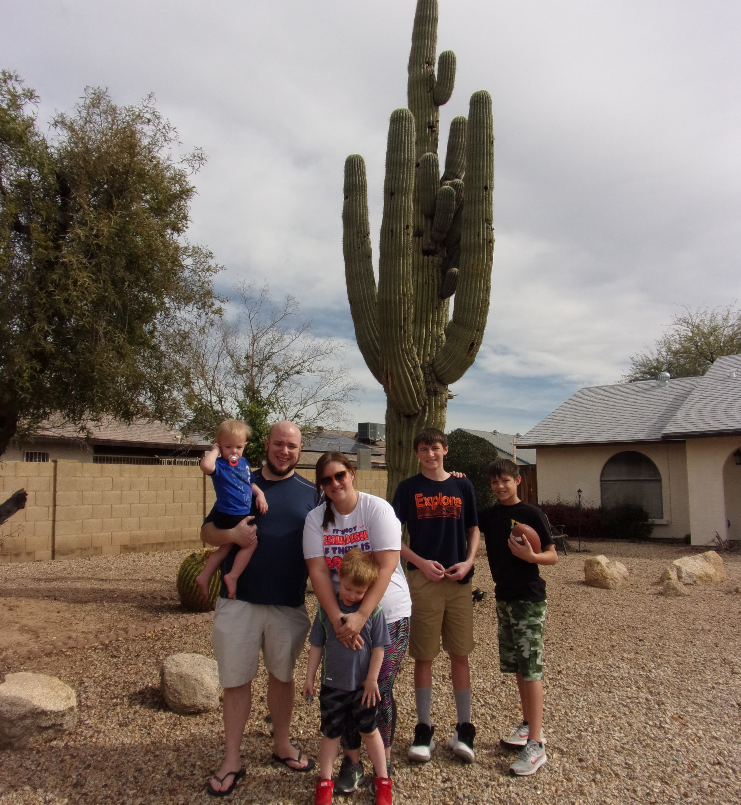

Hobbies & Interests
Hobbies Gallery

Exploring new places like Two Rivers State Park near Louisville, NE, is one of Taryn’s favorite ways to recharge and reflect.

Taryn cherishes quality time with her family, especially during holiday outings and festive traditions.

Whether it’s Arizona or California, traveling brings Taryn joy, perspective, and plenty of memories.